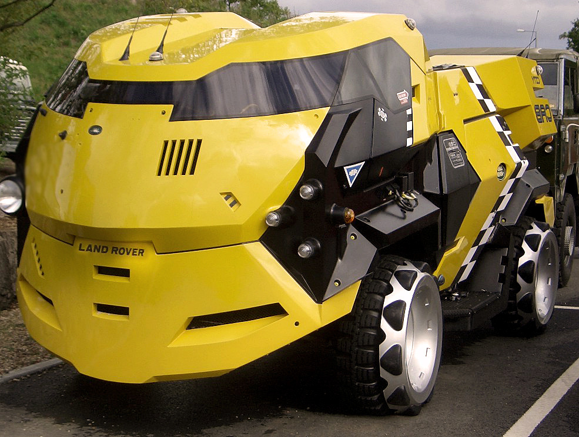
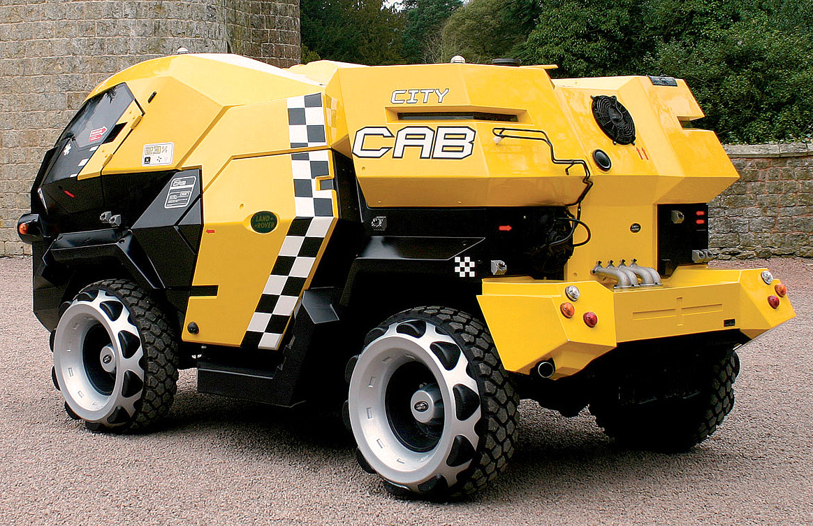

Land Rover City Cab 1994. A number of these vehicles were built, based on a Land Rover 101FC military chassis, for the Judge Dredd movie. Most were broken down after filming but a few survive in private hands as well as one at Land Rover’s museum. They use Rover’s 3.5 Litre V8